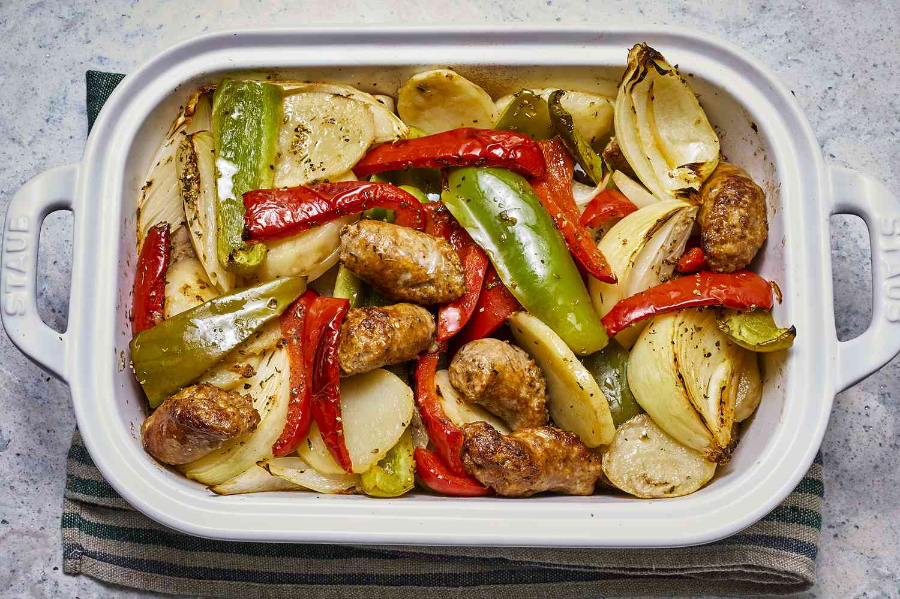

Sausage

This sausage and potato bake is an Italian comfort food classic! The smell of this cooking in my kitchen
transports me back to playing on the street in front of my Papa and Gigi's house in Brooklyn. I make 2 trays of
this for every family get-together, and it's gone in a flash!
Ingredients
- Olive oil
- Italian sausage
- Potatoes
- Bell peppers
- Onions
- White wine
- Chicken stock
- Seasonings
Steps
- Cook the Sausage, Potatoes, Peppers, and Onions
In a skillet over medium heat, first, you'll brown the Italian sausage. After it's evenly brown, add it to a
baking dish.
Then, in the same skillet, cook the potatoes until brown. Add those to the baking dish.
Next, in the same skillet, cook the bell peppers and the onion until they soften. Add them to the baking
dish.
- Season the Sausage and Vegetables
Cover the sausage, potatoes, peppers, and onions with white wine, chicken stock, Italian seasoning, salt,
and pepper.
- Bake the dish until hot and bubbling.